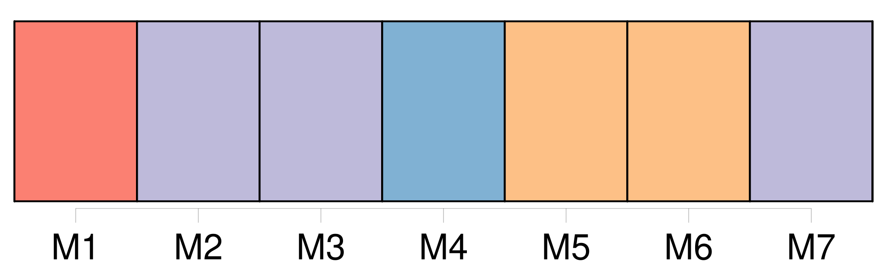

Longueur nb maillons : 12 mentions |
  |
Il avait noté des fautes dans l'ouvrage de M. Thiers, et il parla avec le plus grand respect d' [un certain Dumouchel, professeur] [14 phrases] Un bureau de sapin, placé juste dans le milieu, incommodait par ses angles ; et tout autour, sur des planchettes, sur les trois chaises, sur le vieux fauteuil et dans les coins se trouvaient pêle-mêle plusieurs volumes de l'Encyclopédie Roret, le Manuel du magnétiseur, un Fénelon, d'autres bouquins, avec des tas de paperasses, deux noix de coco, diverses médailles, un bonnet turc et des coquilles rapportées du Havre par [Dumouchel] [71 phrases] Pécuchet le trouva déplaisant et il conduisit Bouvard chez [Dumouchel] [Cet auteur] ( car [il] avait publié une petite mnémotechnie ) donnait des leçons de littérature dans un pensionnat de jeunes personnes, avait des opinions orthodoxes et la tenue sérieuse.
[Il] ennuya Bouvard. [15 phrases] [Dumouchel] leur procura des billets pour une séance de l'Académie. [136 phrases]
Il avait à surveiller les emballages, faire un tas de commissions, d'emplettes encore, et prendre congé de [Dumouchel] !
[Le professeur] lui proposa un commerce épistolaire, où [il] le tiendrait au courant de la littérature ; et après des félicitations nouvelles, lui [souhaita] une bonne santé. [296 phrases]
Il écrivit à [Dumouchel] pour avoir des arbustes avec des graines, acheta une provision de terre de bruyère, et se mit à l'œuvre résolument. |
La ressource peut être téléchargée sur la page Ortolang
Si vous avez des questions ou vous voyez des erreurs, merci d'envoyer un mail à silvia.federzoni89@gmail.com
Site développé par S. Federzoni (contact)